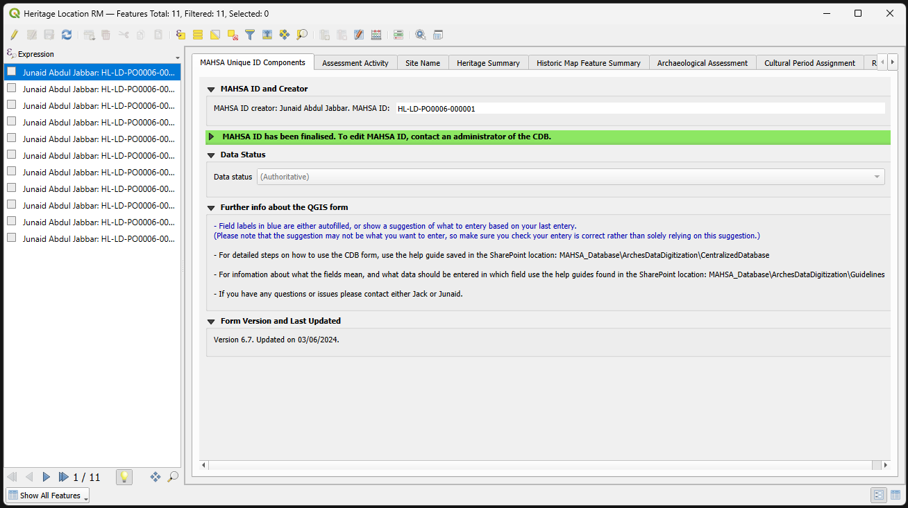
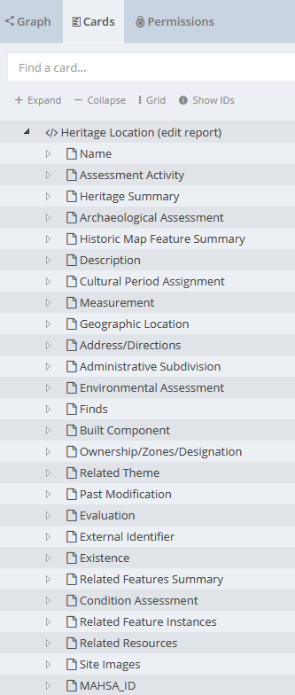

SQL Data Import Pipeline for
Presented By: Junaid Abdul Jabbar
- Documentation of the endangered archaeology and cultural heritage of the Indus River Basin and surrounding areas using the Arches platform
- Collaborative research output with development and training programmes
- Started with Arches v5.1, currently on v7.5.0, upgrading to v7.6.0
Challenges
- Complex site groups with location variations

Challenges
- Collaborative working in a GIS environment with multiple reference layers to compare attributes and geometry to collate data

Challenges
- Nested resource model and data import

Nested Data Import Options
- JSON Import - primarily intended for transferring business data between arches instances.
- SQL Import (v7) - much more flexible and faster than csv data import. Especially useful to migrate data from a SQL database into Arches.
Foreign Data Wrapper
-
To prepare for remote access using postgres_fdw:
- Install the postgres_fdw extension with CREATE EXTENSION
- Create a foreign server object using CREATE SERVER for each remote database, specifying connection information (excluding user and password) as options.
- Create a user mapping with CREATE USER MAPPING for each database user allowed to access the foreign server, specifying remote username and password.
- Create a foreign table using CREATE FOREIGN TABLE or IMPORT FOREIGN SCHEMA for each remote table, ensuring columns match the remote table. You can use different names if the correct remote names are specified as options.
Create schema for resource models
Resource Model Schema - Instances
Arches String - PostgreSQL JSONB
Arches String - PostgreSQL JSONB
Arches String - PostgreSQL JSONB
Import Strings
Import Concepts
Import Date, EDTF, URL, Geojson-feature-collection
Function for Concept-list
Import Concept-list
Import Resource Instance
Import Resource Instance
Import Resource Instance List
Import Resource Instance